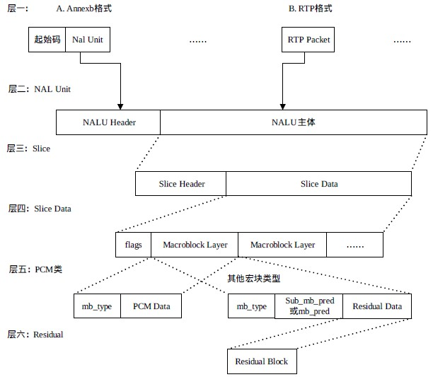
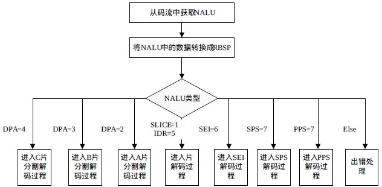

NAL 简介
NAL 全称 Network Abstract Layer, 即网络抽象层。在H.264/AVC 视频编码标准中，整个系统框架被分为了两个层面：视频编码层面（VCL）和网络抽象层面（NAL），其中，前者负责有效表示视频数据的内容，而后者负责格式化数据并提供头信息，以保证数据适合各种信道和存储介质上的传输。NAL 单元是 NAL 的基本语法结构，它包含一个字节的头信息和一系列来自 VCL 的称为原始字节序列荷载（RBSP）的字节流。
NAL单元是 NAL 的基本语法结构，它包含一个字节的头信息和一系列来自 VCL 的称为原始字节序列载荷（RBSP）的字节流。头信息中包含着一个可否丢弃的指示标记，标识着该 NAL 单元的丢弃能否引起错误扩散，一般，如果 NAL 单元中的信息不用于构建参考图像，则认为可以将其丢弃；最后包含的是 NAL 单元的类型信息，暗示着其内含有效载荷的内容。在 RBSP 的最后包含一个 比特 1 若干比特 0，以便字节对齐。
H.264 的编码视频序列包括一系列的 NAL 单元,每个 NAL 单元包含一个 RBSP。编码片(包括数据分割片 IDR 片)和序列 RBSP 结束符被定义为 VCL NAL 单元,其余为 NAL 单元。
典型的 RBSP 单元序列。每个单元都按独立的 NAL 单元传送。NAL单元的类型如下表所示
| NAL Type | Description | VCL | |
|---|---|---|---|
| 0 | 未规定 | N/A | |
| 1 | 非 DIR 图像中不采用数据划分 Slice | Yes | |
| 2 | 非 DIR 图像中 A 类数据划分 Slice | Yes | |
| 3 | 非 DIR 图像中 B 类数据划分 Slice | Yes | |
| 4 | 非 DIR 图像中 C 类数据划分 Slice | Yes | |
| 5 | IDR 图像的 Slice,Coded Video Sequence 的 Access Unit | Yes | |
| 6 | 补充增强信息（SEI） | NO | |
| 7 | 序列参数集（SPS） | NO | |
| 8 | 图像参数集（PPS） | NO | |
| 9 | 分割符（Access Unit Delimiter） | NO | |
| 10 | 序列结束符（End of Sequence） | NO | |
| 11 | 流结束符（End of Stream） | NO | |
| 12 | 填充数据（Filler） | NO | |
| 13 | 保留 | N/A | |
| 14 | 未规定 | N/A |
H.264 码流结构
H.264 的码流结构如下图所示：

Annexb格式： NALU数据+起始码，如果 NALU 对应的 Slice 为一帧的开始,则用 4 字节表示,即 0x00000001；否则用 3 字节表示,0x000001。
解惑：一个字节是由几个16进制的位组成?
两个16进制数!
一个字节八个比特,就是八个二进制位
四个二进制数最大表示为15,就是一个16进制数,所以八位可以表示成两个16进制的数!
RTP格式： NALU 数据 + RTP 协议的 RTP 头数据。
NAL Header： forbidden_bit,nal_reference_bit(优先级),nal_unit_type(类型)。
脱壳操作： 为了使 NALU 主体不包括起始码,在编码时每遇到两个字节(连续)的0，就插入一字节 0x03，以和起始码相区别。解码时,则将相应的 0x03 删除掉
H.264解码
NAL 头信息的 nal_referrence_idc(NRI)用于在重建过程中标记一个 NAL 单元的重要性，值为 0 表示这个 NAL 单元没有用预测，因此可以被解码器抛弃而不会有错误扩散；值高于 0 表示 NAL 单元要用于无漂移重构，且值越高，对此 NAL 单元丢失的影响越大。
NAL 头信息的隐藏比特位，在 H.264 编码器中默认为 0,当网络识别到单元中存在比特错误时，可将其置为 1。隐藏比特位主要用于适应不同种类的网络环境(比如有线无线相结合的环境)。
NAL 单元解码的流程为：首先从 NAL 单元中提取出 RBSP 语法结构，然后按照下图所示的流程处理 RBSP 语法结构。输入的是 NAL 单元，输出结果是经过解码的当前图像的样值点。

NAL 单元中分别包含了序列参数集和图像参数集。图像参数集和序列参数集在其他NAL 单元传输过程中作为参考使用,在这些数据 NAL 单元的片头中，通过语法元素 pic_parameter_set_id 设置它们所使用的图像参数集编号；而相应的每个图像参数集中，通过语法元素 seq_paramter_set_id 设置他们使用的序列参数集编号。